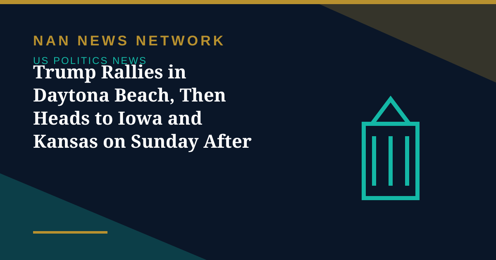

Trump Rallies in Daytona Beach, Then Heads to Iowa and Kansas on Sunday After Canceled Stops

President Donald Trump addressed supporters at a rally at the Ocean Center in Daytona Beach, Florida, on Friday night, in the final weekend of campaigning before Tuesday's midterm elections, according to live election coverage on October 31.
Iowa and Kansas back on the schedule
Trump will now hold rallies in Kansas and Iowa on Sunday, November 1, a day after those stops were canceled in favor of tele-rallies, the coverage reported. The reversal restores in-person events in two states with unexpectedly competitive Senate races, after the president had instead planned to campaign virtually across nearly 20 states. Former Vice President Kamala Harris campaigned for Democrats in Atlanta on Friday, as both parties made their final case to voters in the races that will decide control of Congress.
Courts and ballot fights continue
A federal appeals court on Friday again refused to order California to set aside more than 20,000 mail-in ballots, rejecting an administration effort that a court described as unconstitutional, according to the same coverage. The Justice Department has also widened its subpoenas in California and Alaska, the New York Times reported, as election officials brace for further legal challenges in the final days before polls close.
Sources: Indian Express live election coverage, New York Times, October 31, 2026
More on US Politics News
- Early Voting Surges Past 47.9 Million as Texas Turnout Jumps 50% Ahead of the Midterms
- Trump Cancels Iowa and Kansas Rallies, Switching to Tele-Rallies Across Nearly 20 States
- Justice Department Escalates Election Legal Challenges in Alaska and California Days Before Midterms
- FEC Filing System Restored After 41-Hour Outage That Hid Last-Minute Midterm Spending
- Trump's Final Midterm Sprint: Ohio Rally Done, South Carolina and Kansas Next
- FEC Filing System Goes Offline Days Before Midterms After Reported Breach Attempt
- Trump Says He Will Respect Midterm Results 'If They're Honest'
- Polls Give Democrats the Edge One Week Before the 2026 Midterms
- Federal Judge Hears Trump Administration Bid Over California Ballots
- Midterm Early Voting Nears 27 Million Ballots, Running Ahead of the 2022 Pace
- Trump Rallies in Port Huron, Defends Iran Stance and Repeats $5,000 Check Pledge
- Midterm Early Voting Is Underway Across America Ahead of November 3
- Trump Approval Falls to a Record-Low 31% in Reuters/Ipsos Poll as Midterms Near
- FBI Investigating Suspicious Letters Sent to Three Arizona Democrats